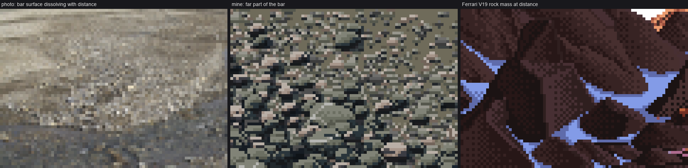
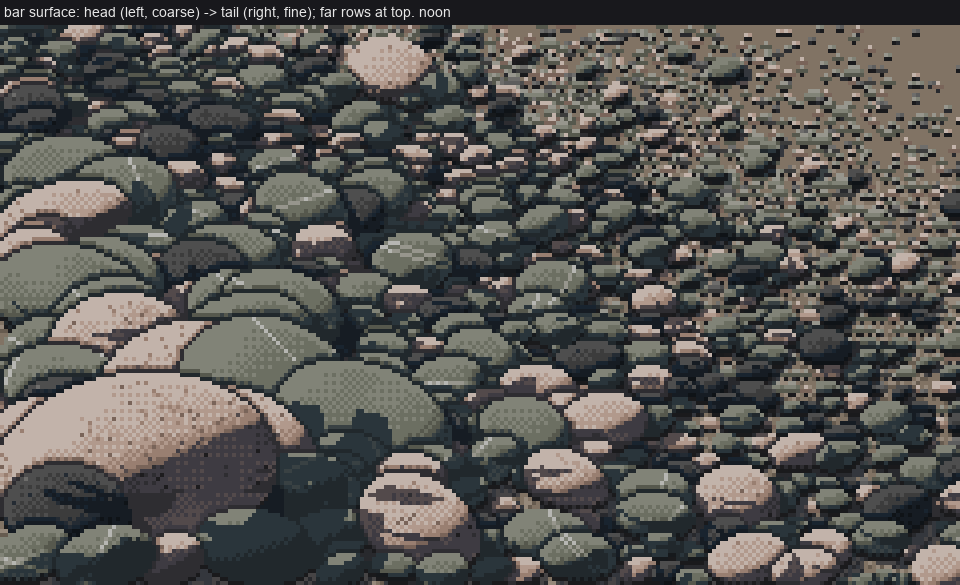
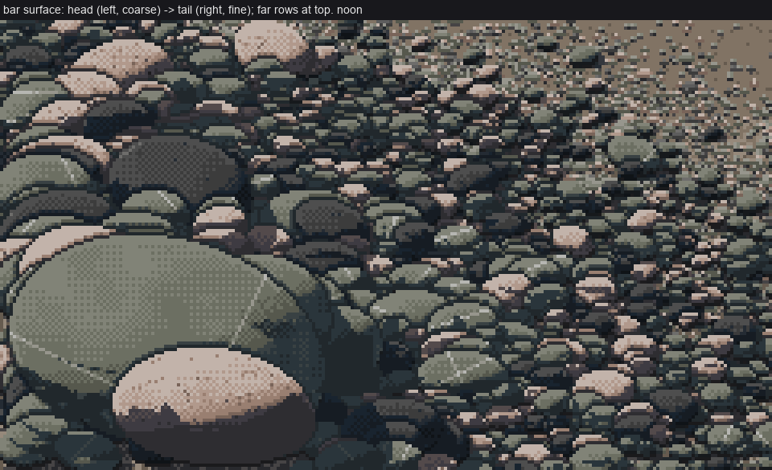
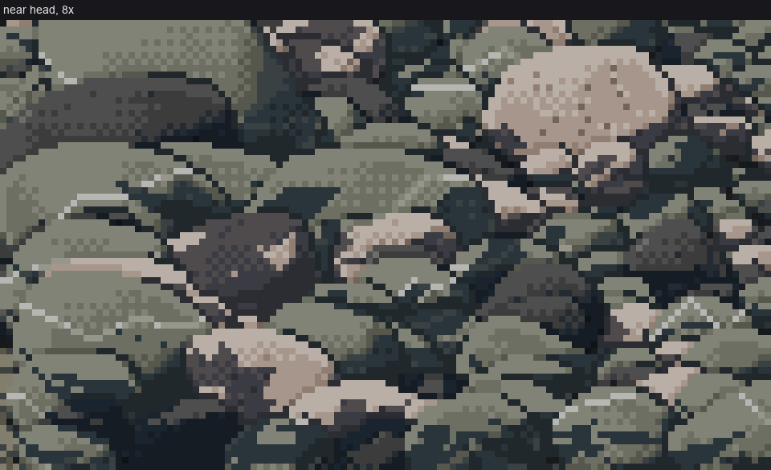
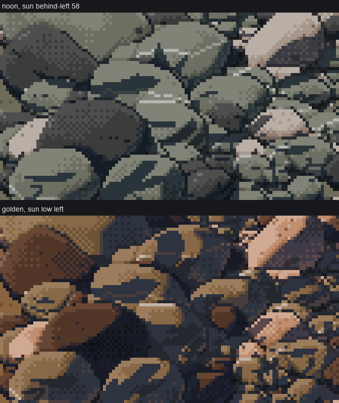
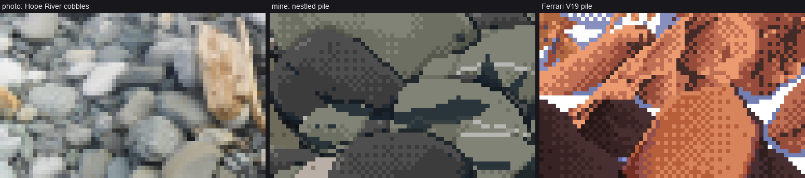

8. Packing a bar
← material marks · front page · next: the edges →
When: many stones as one surface. That means a gravel bar, a stream bed, or a nestled pile (which is just a bar at a fixed scale).

bar(seed=1): 240×140 px at noon, about 1,500 stones. Head (coarse) at left, tail (fine) at right, far rows at the top.

A braided-river bar photo that dissolves with distance | the far part of my bar | Ferrari's rock mass at distance (V19).
Packed, not placed

nb061. The trap: stones laid out one by one on open ground. They read as eggs on a tray. In the photos, cobbles touch, overlap and are half buried, with finer gravel filling the joints (a "clast-supported" deposit).
bar.bar walks rows from far (top) to near (bottom). In each row it steps along x by roughly one stone width, so neighbours touch and overlap. Rows advance by less than a typical stone's height, so rows overlap too:
scale = lambda y: px_per_m_far + (px_per_m_near - px_per_m_far) * (np.maximum(y, 0) / H) ** 1.3
y = horizon + 1.0
while y < H + 6:
s_row = scale(y) # px per metre at this row
x = rng.uniform(-4, 2)
while x < W + 4:
t = np.clip(x / W, 0, 1) # 0 at the head, 1 at the tail
size_m = np.exp(np.log(head_m) * (1 - t) + np.log(tail_m) * t) * np.exp(rng.normal(0, size_sd))
D = size_m * s_row
if D >= 5:
stones.append(dict(x=x + D / 2, y=y + rng.uniform(-0.3, 0.3) * D * 0.4, D=D,
rock=pick_rock(rng, mix or ROCK_MIX), seed=int(rng.integers(1e6)),
yaw=rng.uniform(-40, 40), elong=rng.uniform(1.15, 1.6),
flat=rng.uniform(0.5, 0.75)))
elif D >= 2:
ticks.append((x + D / 2, y, D))
x += max(1.5, D * rng.uniform(0.75, 1.05) / density) # touching, overlapping
typ = np.exp(np.log(head_m) * 0.3 + np.log(tail_m) * 0.7) * s_row
y += max(1.0, 0.4 * min(typ, 30))
The parts that matter:
- Size sorting is a log-linear blend from
head_mtotail_malong the bar, with a lognormal spread (size_sd=0.45). Real bars fine downstream, and the spread keeps any row from looking graded. - Perspective is one
scale(row). Everything downstream (mark class, grain contrast) keys off pixels, not metres. - Every stone is different: yaw ±40°, elongation 1.15–1.6, flatness 0.5–0.75, its own seed for lumps and facets (page 3).
- The rock mix for a glacial braided river is
ROCK_MIX = [('greywacke', 0.55), ('granite', 0.25), ('basalt', 0.2)].
Then the layers go down in order: grain everywhere (the matrix), ticks, then the stones through scene.place (joins, shadows, page 5). Last, restore the matrix where no stone landed and cut the pockets:
grain_fill(cv, region, contrast, 0.38, rng)
for (x, y, D) in ticks:
tick_stamp(cv, x, y, D, pick_rock(rng, mix or ROCK_MIX), sun_left, rng)
base_step, base_mat = cv.step.copy(), cv.mat.copy()
info = place(cv, stones, sun=sun)
g = info['ground']
cv.step[g] = base_step[g]; cv.mat[g] = base_mat[g]
pockets(cv, info)
Scale choices that went wrong

nb067. The first bar: the far half is a beach, because the matrix was light sand. The fix (a dark matrix) is on page 4.

nb069. With the dark matrix it works, but the near scale of 150 px/m made a 60 px monster in the foreground. 110 px/m keeps the nearest stones around 25–35 px, and the whole ladder fits in one frame.

nb094. The near head at 8×, after the pocket fix.
The nestled pile is the same packer
My hand-placed "nestled" stones (the eggs above) were replaced by bar() at a fixed scale (head_m=0.2, tail_m=0.09, px_per_m_far=95, px_per_m_near=110, density=1.15):

Stage 4, nestled: noon (sun 58° up) and golden hour. Golden is still too dark (page 5, "not solved").

Hope River photo | my nestled pile | Ferrari's V19 pile, at 8×.
Cost
It takes about 50–70 s for 240×140 px and about 1,500 stones, because every stone is built as real 3D geometry. That's fine for sheets. For a game you'd cache stone sprites per (size bucket, seed, sun) and reuse them, since the step canvas is palette-free. Before anything else, pin BLAS to one thread (page 10).